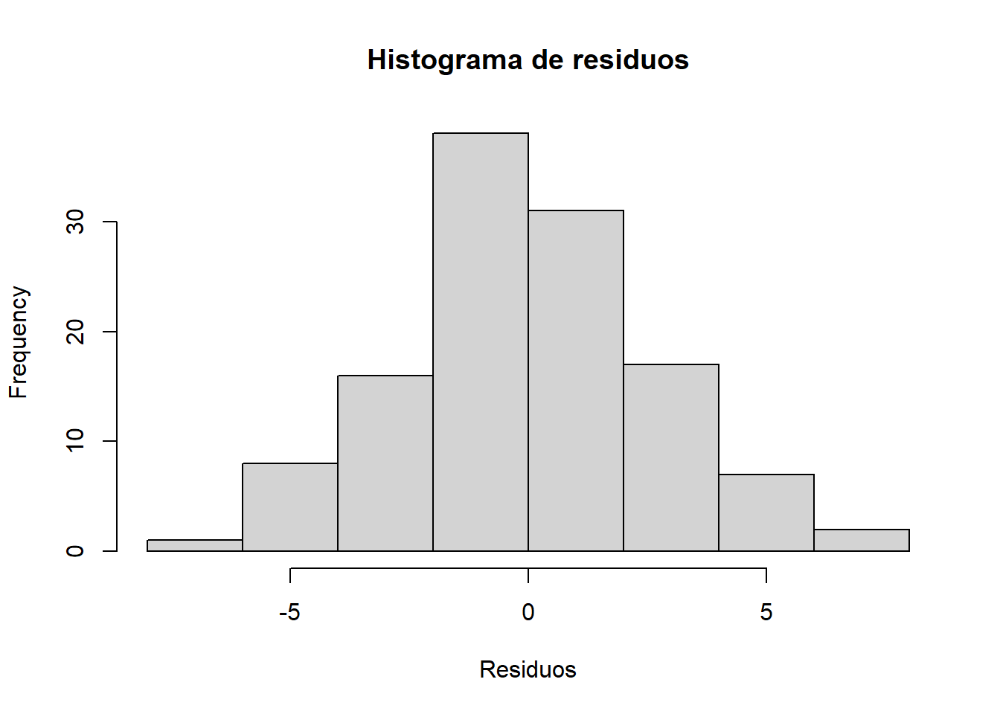

Capitulo 5 Diseño de Bloques Completamente al Azar (DBCA)
Problema
Introducción:
Precaución
Script: Análisis de un Diseño en Bloques Completamente al Azar (DBCA)
Variables esperadas en la base:
i. Bloque: factor que representa los bloques
ii. Tratamiento: factor con los tratamientos a evaluar
iii. Respuesta: variable cuantitativa a analizar #
Cargar Paquetes y librerías necesarias para el analisis de los datos.
Df Sum Sq Mean Sq F value Pr(>F)
Tratamiento 3 3602 1200.6 153.749 <2e-16 ***
Bloque 2 11 5.4 0.688 0.505
Residuals 114 890 7.8
---
Signif. codes: 0 '***' 0.001 '**' 0.01 '*' 0.05 '.' 0.1 ' ' 1
Verificación de supuestos
res <-residuals(modelo)
Normalidad de residuos (Shapiro-Wilk)
shapiro.test(res)
Shapiro-Wilk normality test
data: res
W = 0.99559, p-value = 0.9725
qqnorm(res)qqline(res, col ="red")
hist(res, main ="Histograma de residuos", xlab ="Residuos")

Homogeneidad de varianza
bartlett.test(Resultado ~ Tratamiento, data = DBCA)
Bartlett test of homogeneity of variances
data: Resultado by Tratamiento
Bartlett's K-squared = 7.4355, df = 3, p-value = 0.05924
car::leveneTest(Resultado ~ Tratamiento, data = DBCA)
Levene's Test for Homogeneity of Variance (center = median)
Df F value Pr(>F)
group 3 1.3691 0.2557
116
fligner.test(Resultado ~ Tratamiento, data = DBCA)
Fligner-Killeen test of homogeneity of variances
data: Resultado by Tratamiento
Fligner-Killeen:med chi-squared = 3.3125, df = 3, p-value = 0.3459
Independencia de residuos
dwtest(modelo)
Durbin-Watson test
data: modelo
DW = 2.042, p-value = 0.4159
alternative hypothesis: true autocorrelation is greater than 0
Gráficos de diagnóstico del modelo
# Gráficos de diagnóstico del modelopar(mfrow =c(1, 2)) # Dividir la ventana en 2 gráficos (1 fila, 2 columnas)plot(modelo, which =1) # Residuos vs valores ajustados (homogeneidad)plot(modelo, which =2) # QQ-plot (normalidad)
par(mfrow =c(1, 1)) # Regresar a 1 gráfico por pantalla
Gráfico de valores ajustados vs residuos estandarizados
# Residuos estandarizadosresid_est <-rstandard(modelo)# Valores ajustados predichosval_ajus <-fitted(modelo)plot(val_ajus, resid_est,main ="Gráfico de valores ajustados vs residuos estandarizados",xlab ="Valores ajustados",ylab ="Residuos estandarizados")abline(h =0, col ="red", lty =2)
Pairwise comparisons using t tests with pooled SD
data: DBCA$Resultado and DBCA$Tratamiento
NPK + Bioinoculante NPK Comercial Orgánico + NPK
NPK Comercial 1.3e-06 - -
Orgánico + NPK < 2e-16 < 2e-16 -
Organico + NPK (50:50) 5.6e-11 < 2e-16 8.6e-10
P value adjustment method: bonferroni
Visualización de resultados
Caja y Bigote en R base
boxplot(Resultado ~ Tratamiento, data = DBCA, main ="Gráfico de caja y bigotes por tratamiento", xlab ="Tratamiento", ylab ="Resultado", col =rainbow(length(unique(DBCA$Tratamiento))), border ="black")
Boxplot en ggplot2
ggplot(DBCA, aes(x = Tratamiento, y = Resultado, fill = Tratamiento)) +geom_boxplot() +theme_minimal() +labs( title ="Distribución del resultado por tratamiento", x ="Tratamiento", y ="Resultado")